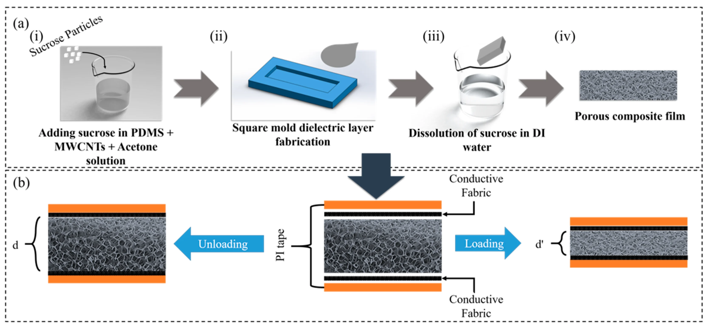
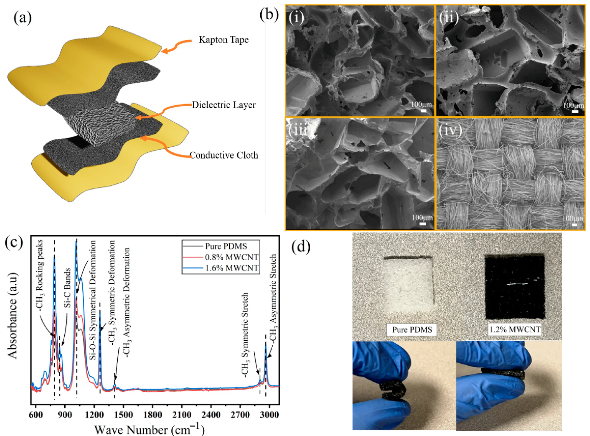
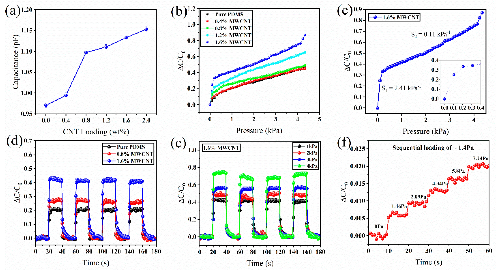
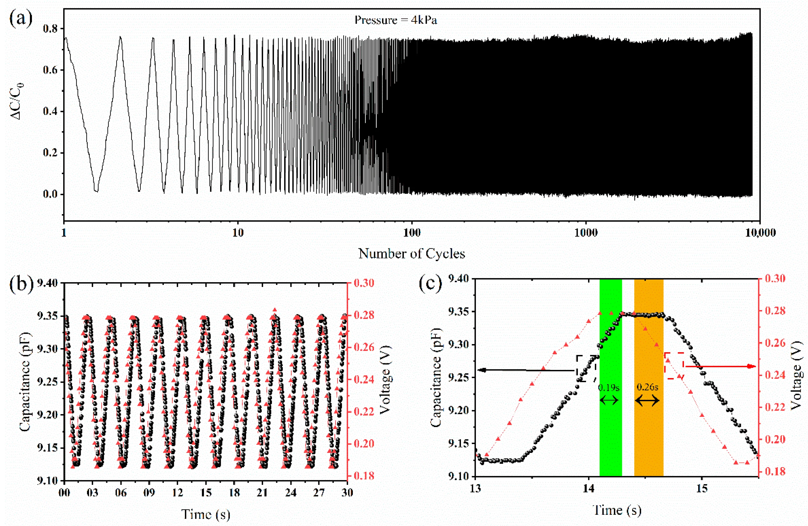
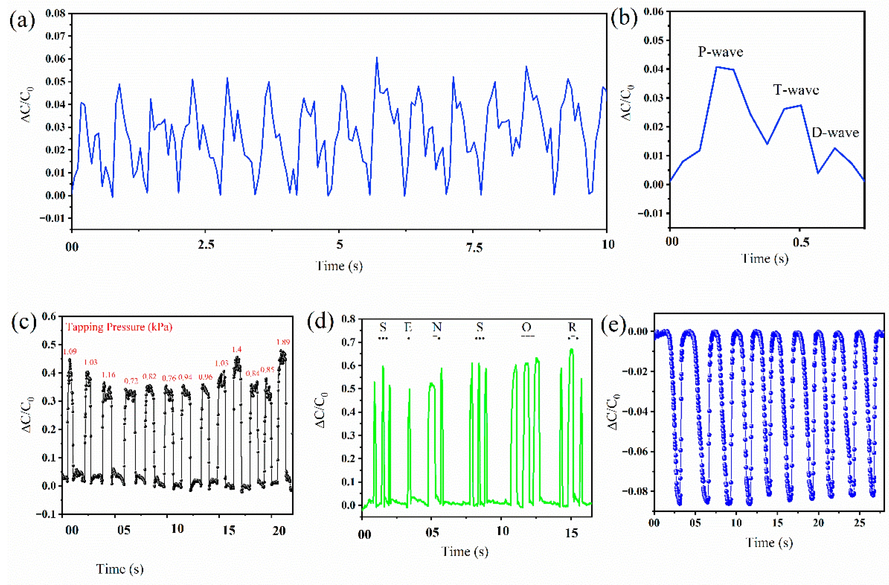

Wearable Capacitive Pressure Sensor
Contact & Non-Contact Sensing
MWCNT-PDMS Porous Dielectric for Tactile and Proximity Sensing
DOI: 10.3390/molecules27206872
Journal: Molecules (Open Access) | Citations: [Add citation count if known]


Project Overview
This research presents a low-cost, sacrificial template-assisted method for fabricating a capacitive pressure sensor using a porous Polydimethylsiloxane (PDMS) and multiwalled carbon nanotube (MWCNT) composite dielectric layer. The sensor demonstrates high sensitivity (2.41 kPa⁻¹), ultralow detection limit (1.46 Pa), excellent cyclic stability (9000 cycles), and unique dual-mode sensing capability for both contact (pressure) and non-contact (proximity) applications using a single data readout system.
Motivation
Flexible pressure sensors are critical for healthcare monitoring, electronic skin, tactile sensing, and soft robotics. However, achieving high sensitivity often requires expensive, multi-step fabrication processes (photolithography, 3D printing). This work addresses the barrier between high sensitivity and low fabrication cost by using a simple sacrificial template method with sucrose particles to create porosity in the dielectric layer, combined with MWCNT functionalization to enhance dielectric permittivity.
Materials & Fabrication
Materials Used:
- Polymer: PDMS (Polydimethylsiloxane) - SYLGARD™ 184
- Conductive Filler: MWCNT (6-13 nm OD × 2.5-20 μm length)
- Sacrificial Template: Sucrose particles (sugar)
- Solvent: Acetone (to increase pore volume)
- Electrodes: Conductive carbon cloth
- Packaging: Polyimide (Kapton) tape
Fabrication Process:
- Solution Preparation: PDMS base and curing agent mixed at 10:1 ratio. MWCNTs dispersed in acetone and added to PDMS (0-2 wt.% concentrations).
- Sacrificial Template Addition: Sucrose particles added to the mixture (volume ratio PDMS:Acetone:Sucrose = 2:1:8).
- Casting & Curing: Mixture poured into glass mold (40×25×2 mm) and cured at 70°C for 5 hours.
- Template Removal: Sucrose particles dissolved in water overnight, leaving porous structure (~82% porosity).
- Sensor Assembly: Dielectric layer (1×1 cm) sandwiched between conductive carbon cloth electrodes, packaged in Kapton tape.
Sensing Mechanism
Pressure Sensing (Contact Mode)
The sensor operates on the parallel plate capacitor mechanism:
- Without Pressure: Pores contain air (εᵣ ≈ 1), low dielectric constant
- Under Pressure: Pores collapse, air replaced by PDMS (εᵣ ≈ 3) + MWCNT network (εᵣ ≈ 100 at 1 kHz)
- Result: Large capacitance change (ΔC) due to both reduced distance (d) and increased permittivity (ε)
Proximity Sensing (Non-Contact Mode)
The sensor detects objects via fringe field effect:
- Electric field lines extend beyond parallel plates (fringe field)
- When a conductive object (e.g., finger) approaches, fringe field is absorbed → capacitance decreases
- Detection range: 12 inches (30 cm)
- Enables hands-free applications without multiple sensors
Performance Characterization
Pressure Sensitivity Optimization
MWCNT concentration was optimized for maximum sensitivity:
| MWCNT Concentration | Dielectric Permittivity (εᵣ) | Sensitivity (0-0.5 kPa) |
|---|---|---|
| 0% (Pure PDMS) | 3.0 | 0.31 kPa⁻¹ |
| 0.4% | 4.11 | - |
| 0.8% | 4.99 | - |
| 1.2% | 5.05 | - |
| 1.6% (Optimal) | 5.15 | 2.41 kPa⁻¹ |
| 2.0% | 5.24 | Decreased (stiffness increase) |
Key Performance Metrics
- High Sensitivity Range (0-0.5 kPa): 2.41 kPa⁻¹
- Low Sensitivity Range (>0.5 kPa): 0.11 kPa⁻¹
- Limit of Detection (LoD): 1.46 Pa (equivalent to 69 mg mass)
- Cyclic Stability: 9000 cycles with stable performance
- Base Capacitance: Increases with MWCNT concentration (0-0.8 nF range)
- Response Delay: 0.19 s rise time (compared to commercial sensor)


Materials Characterization
SEM Analysis
- Randomly distributed pores throughout the dielectric layer
- Average pore size: 455.22 ± 168.92 μm
- Pore volume: ~82% (controlled by sucrose/acetone ratio)
- Conductive textile electrode shows high surface roughness (enhances sensitivity)
FTIR Analysis
- Si(CH₃) rocking bands: 785-815 cm⁻¹
- Si-C bonds: 835-855 cm⁻¹
- Si-O-Si stretching: 1000-1100 cm⁻¹
- -CH₃ deformation: 1258 cm⁻¹ and 1410 cm⁻¹
Real-World Applications
1. Pulse Waveform Monitoring (Physiological Sensing)
The sensor successfully captured arterial pulse waveforms from the wrist artery of a 30-year-old healthy male volunteer. Key features extracted:
- Heart Rate: 85 BPM
- Systolic Peak (P-wave): Ventricular contraction
- Diastolic Peak (D-wave): Reflection from lower body
- Percussion Response (T-wave): Peripheral artery reflection
- Augmentation Index (AIx): 68% (normal, no vascular aging)
2. Tactile Sensing & Morse Code Generation
The sensor detects finger tapping at irregular intervals and can generate Morse code (dots and dashes), with potential applications in hospital settings for paralyzed patients to communicate.
3. Proximity Sensing (Non-Contact)
- Detection Range: 12 inches (30 cm)
- Capacitance Change: ~8% when finger approaches
- Applications: Touchless interfaces, automatic dispensers, gesture control, robotics collision avoidance
4. COVID-19 Related Applications
The proximity sensing capability enables touchless applications to prevent disease spread: automatic soap dispensers, water faucets, door handles, and sanitizer dispensers.

Equipment Used
- JSM-FS100 Scanning Electron Microscope (SEM)
- JASCO FT/IR-4100 (FTIR Spectroscopy)
- MARK-10 ES-20 Test Stand
- MARK-10 M5-50 Force Gauge
- Agilent 4263B Precision LCR Meter
- LabVIEW for Data Acquisition
Comparison with State-of-the-Art
| Material | Sensitivity (Low Pressure) | Sensitivity (High Pressure) | Year |
|---|---|---|---|
| Porous PDMS | - | 2021 | |
| Porous PDMS | 2021 | ||
| Porous Ecoflex/GNP | 2019 | ||
| Porous PDMS/MWCNT (This work) | 2.41 kPa⁻¹ | 0.11 kPa⁻¹ | 2022 |
Downloads
Key Innovations
- First demonstration of low-cost sacrificial template method for porous PDMS-MWCNT dielectric layer
- Dual-mode sensing (pressure + proximity) using single data readout system
- Ultralow detection limit of 1.46 Pa (69 mg mass)
- Simple, scalable fabrication without photolithography or 3D printing
- Record sensitivity for porous PDMS-based sensors (2.41 kPa⁻¹)
- Excellent stability over 9000 cycles
Funding
- National Science Foundation (NSF) Engineering Research Center for PATHS-UP ERC (Award #1648451)
Related Publications
- Chowdhury, A.H., Jafarizadeh, B., Pala, N., Wang, C. "Wearable Capacitive Pressure Sensor for Contact and Non-Contact Sensing and Pulse Waveform Monitoring." Molecules, 2022, 27, 6872.
- Chowdhury, A.H., Jafarizadeh, B., Pala, N., Wang, C. "Paper-Based Supercapacitive Pressure Sensor for Wrist Arterial Pulse Waveform Monitoring." ACS Applied Materials & Interfaces, 2023, 15, 53043-53052.
- Chowdhury, A.H., Jafarizadeh, B., Baboukani, A.R., Pala, N., Wang, C. "Monitoring and analysis of cardiovascular pulse waveforms using flexible capacitive and piezoresistive pressure sensors and machine learning perspective." Biosensors and Bioelectronics, 2023, 237, 115449.
Conclusion
This study successfully developed a low-cost, high-performance capacitive pressure sensor using a porous PDMS-MWCNT dielectric layer fabricated via a simple sacrificial template method. The sensor achieved excellent sensitivity (2.41 kPa⁻¹), ultralow detection limit (1.46 Pa), and outstanding cyclic stability (9000 cycles). Unique dual-mode sensing capability enables both contact (pressure) and non-contact (proximity) sensing using a single readout system. The sensor demonstrated practical applications in pulse waveform monitoring, tactile sensing, Morse code generation, and proximity detection (12-inch range). This work provides a scalable, cost-effective solution for wearable health monitoring and touchless interface applications.